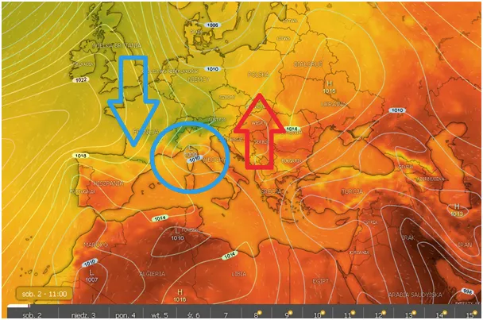
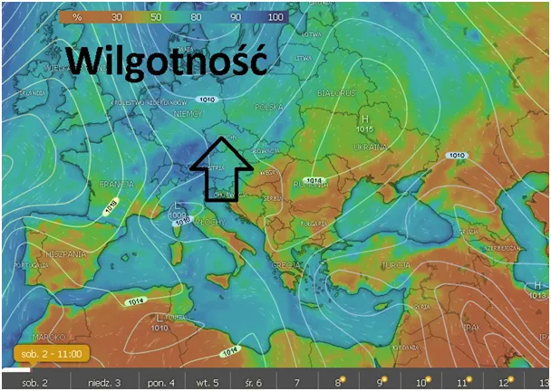
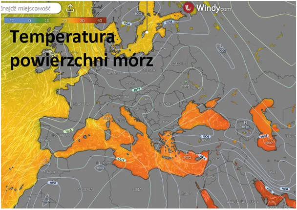
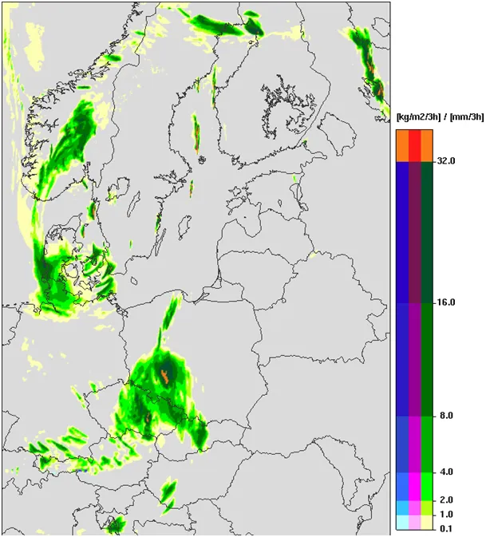

Prawdziwy Niż Genueński nadchodzi.
Od tygodnia prasa kłamie o Niżu Genueńskim, który zalewa nasz kraj. To był niż śląski, który narodził się tydzień temu nad Śląskiem, a Niż Genueński nad Zatoką Genueńską rodzi się w tej chwili (sobota 2 sierpnia).

Oczywiście nikt o tym nie pisze, bo się już towarzysze straszyciele, dawniej wieszaciele, wystrzelali z tematu. Powietrze nad Europą jest wilgotne od frontów znad Atlantyku, a ten niepozorny jeszcze niż dorzuci paczkę ciepłego mokrego powietrza, które powstaje od parowania Morza Śródziemnego u wybrzeży Italii.

Warto zwrócić uwagę jak zimne jest Morze Śródziemne na południu Francji. Tam zimne prądy z północy, przez Bramę Rodanu chłodzą Riwierę Francuską, aż żal, że Rosjanom nie wolno tam w tym sezonie morsować, od kilku sezonów przenieśli się do Turcji, gdzie lansują bikini przez cały rok.

Niż przyniesie do Polski długotrwałe opady. W okolicach Nysy i Kłodzka popada dobrze przez całą dobę już od soboty po południu a potem w głębi Polski. Ostatnia mapa pokazuje prognozę opadów w niedzielę o świcie.

Paweł Klimczewski